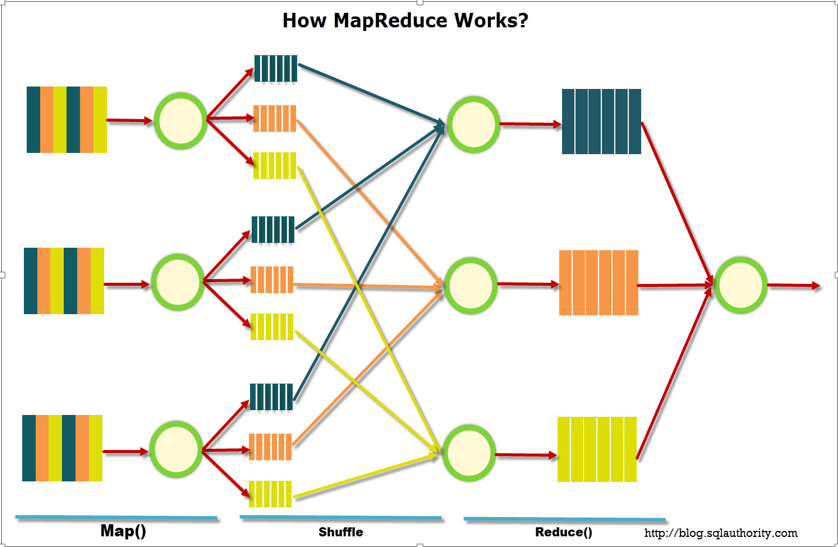
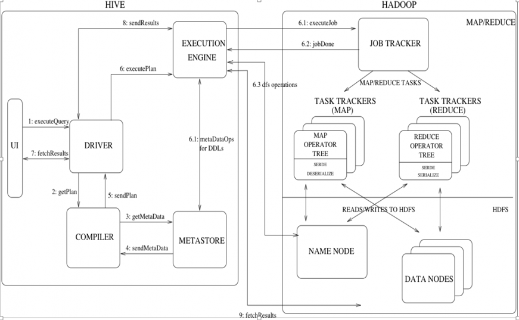
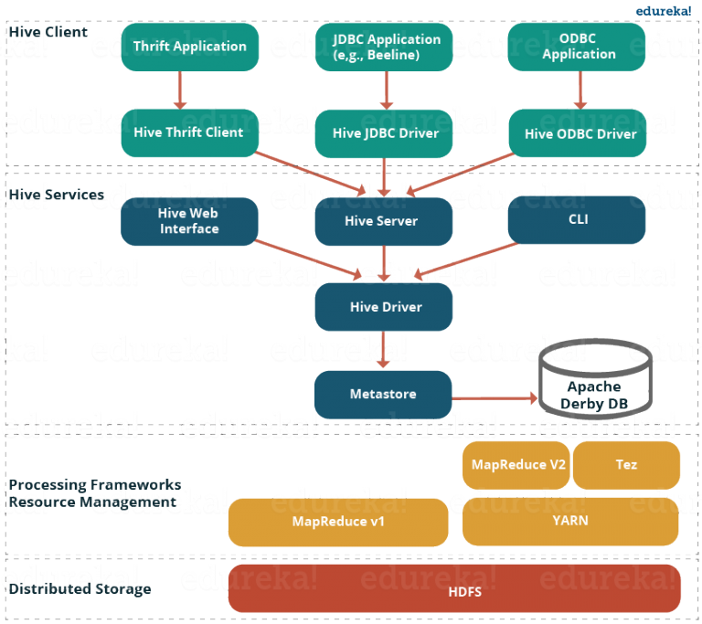
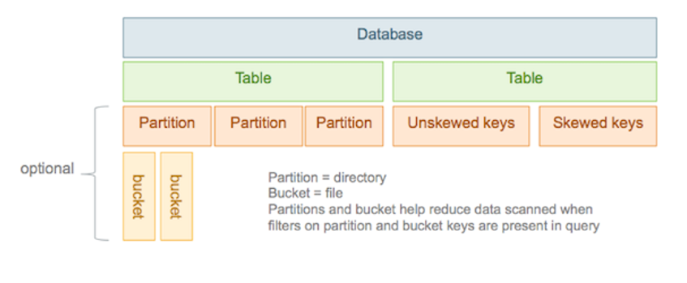
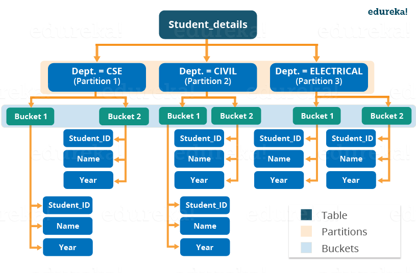

Hive là một kho dữ liệu (data warehouse) xử lý các dữ liệu trên nền tảng Hadoop. Nhiệm vụ chính của Hive là để tổng hợp, tạo truy vấn và phân tích dữ liệu. Hive có ngôn ngữ truy vấn được hỗ trợ truy xuất giống SQL (HiveQL / HQL).
SQL + Hadoop MapReduce = HiveQL
Ngày nay, xã hội càng phát triển nên nhu cầu sử dụng mạng xã hội ngày càng mở rộng, người dùng Facebook càng ngày càng tăng đòi hỏi khả năng xử lý các truy vấn, hình ảnh, lưu trữ dữ liệu… càng lớn. tạo ra một vấn đề rất lớn cần phải giải quyết chính vì vậy Facebook đã tạo ra Hive.
MapReduce được thiết kế bởi Google như 1 mô hình lập trình xử lý tập dữ liệu lớn song song, thuật toán được phân tán trên 1 cụm. MapReduce gồm các thủ tục: 1 Map() và 1 Reduce(). Thủ tục Map() lọc (filter) và phân loại (sort) trên dữ liệu Thủ tục Reduce() thực hiện tổng hợp dữ liệu


Hình ảnh dưới đây mô tả kiến trúc Hive và cách mà dữ liệu truy vấn được gửi vào Hive và cuối cùng được xử lý bằng cách sử dụng MapReduce:

Như thể hiện trong hình trên, kiến trúc Hive có thể được phân loại thành các thành phần sau:

Dữ liệu trong Hive có thể được phân loại thành ba loại cấp sau:
Có 2 loại bảng trong Hive đó là Managed Table (có trách nhiệm quản lý dữ liệu của một bảng) và External Table(không chịu trách nhiệm quản lý dữ liệu.)
Command tạo cấu trúc như sau:
• CREATE TABLE table_name> (column1 data_type, column2 data_type);
• LOAD DATA INPATH HDFS_file_location> INTO table managed_table;"
• CREATE EXTERNAL TABLE table_name> (column1 data_type, column2 data_type) LOCATION ‘table_hive_location>’;
• LOAD DATA INPATH HDFS_file_location>’ INTO TABLE table_name>;
• CREATE TABLE table_name (column1 data_type, column2 data_type) PARTITIONED BY (partition1 data_type, partition2 data_type,….);
• CREATE TABLE table_name PARTITIONED BY (partition1 data_type, partition2 data_type,….) CLUSTERED BY (column_name1, column_name2, …) SORTED BY (column_name [ASC|DESC], …)] INTO num_buckets BUCKETS;
Ví dụ về một cấu trúc dữ liệu trong HIVE

https://www.edureka.co/blog/hive-tutorial/
https://www.youtube.com/watch?v=tKNGB5IZPFE
https://blog.sqlauthority.com/